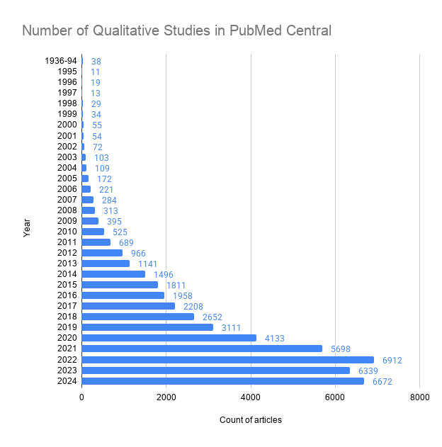
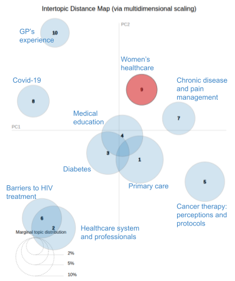
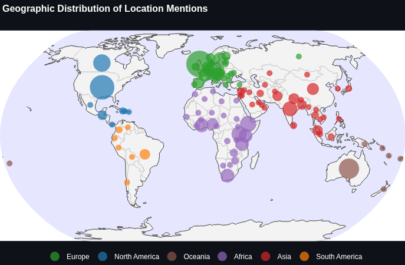
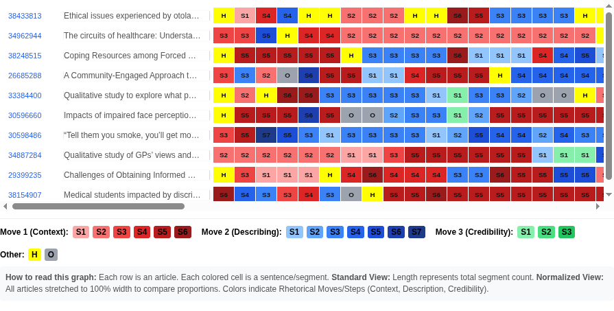

NATESOL - Technology for 21st Century English Language Learning and Teaching
Language Centre, University of Leeds
16 May 2026
Students in Medical and Healthcare typically receive little training
Qualitative studies are increasingly important
Existing resources are primarily for more “canonical” genres, e.g. writing guides: Divan (2009), Knisely (2017)

DDL fosters a lexico-grammatical awareness through exposure to attested, naturally occurring language rather than simplified textbook examples (Flowerdew, 2015; Johns, 1991)
STEM students tend to be receptive to empirical, data-driven evidence.
Authentic research articles from familiar databases (PubMed, PLoS) in ESAP makes the relevance immediately apparent (Hamp-Lyons, 2011)
Indirect DDL
Direct DDL
A Master’s student is drafting their qualitative methods chapter over the summer, with limited access to supervisory feedback or writing centre support. How do they know what is conventional?
Seeing “what real articles look like” reduces anxiety about qualitative writing, particularly when students can compare patterns across multiple sources
PubMed Central
PLoS (Public Library of Science)
Click “Use PubMed Dataset” to start.
“How do I report the number of people I interviewed?”
“Do I provide the ethical review reference number? Where?”
Collocation Flow visualization
KWIC Concordance (table and link to articles)
LDA (Blei et al. 2003) is a topic modelling technique that automatically groups documents by their underlying themes.
This topic modelling technique has already been adopted in corpus linguistics studies (Jaworska & Nanda, 2018; Huang & Jiang, 2026).
Identified topics in the LDA results based on 15,159 full articles:

Some topics are correlated to locations


Also:
Ongoing work on more generalized python package for MSA visualization (comments welcome!)
Plans for scaling or replication
Custom data set function (challenge with compute resources and storage)
Displaying Move-Step Analysis (currently 10 for demo)
User training + training on replication
Replit https://replit.com/
Streamlit https://streamlit.io/ (“Streamlit Community” for free hosting)
Google Antigravity https://antigravity.google/ (If you’re already familiar with VS Code, or interested in more advanced “agentic” AI coding)
Google AI Studio https://aistudio.google.com/
Chatbot of your choice for the occasional questions.
These are just new websites that you can visit and start playing with.
You don’t need all of them!
Vibe coding is simpler than you think!
No deep programming knowledge required.
Blei, D. M., Ng, A. Y., & Jordan, M. I. (2003). Latent dirichlet allocation. Journal of machine Learning research, 3, 993-1022.
Boulton, A., & Cobb, T. (2017). Corpus use in language learning: A meta‐analysis. Language learning, 67(2), 348-393.
Boulton, A., & Forti, L. (2025). Corpus linguistics and data-driven learning. In International Encyclopedia of Language and Linguistics (pp. 1-8). Elsevier.
Cotos, E., Huffman, S., & Link, S. (2017). A move/step model for methods sections: Demonstrating rigour and credibility. English for Specific Purposes, 46, 90-106.
Divan, A. (2009). Communication Skills for the Biosciences. Oxford University Press.
Flowerdew, L. (2015). Data-driven learning and language learning theories. In Flowerdew, L., Leńko-Szymańska, A., & Boulton, A. (eds). Multiple affordances of language corpora for data-driven learning, pp. 15-36.
Gabrielatos, C. (2005). Corpora and language teaching: Just a fling or wedding bells. TESL-EJ, 8,1–35.
Hamp-Lyons, L. (2011). English for academic purposes. In Hinkel, E. (ed) Handbook of research in second language teaching and learning, pp. 89-105.
Huang, Z. & Jiang, Z. (2026). Text mining of syntactic complexity in L2 writing: an LDA topic modeling approach. International Review of Applied Linguistics in Language Teaching, 64(1), 523-548. https://doi.org/10.1515/iral-2024-0132
Jaworska, S, Anupam Nanda, A. (2018) Doing Well by Talking Good: A Topic Modelling-Assisted Discourse Study of Corporate Social Responsibility, Applied Linguistics, 39(3), 373–399, https://doi.org/10.1093/applin/amw014
Johns, T. (1991). Should you be persuaded: Two samples of data-driven learning materials. ELR Journal 4, 1-16.
Kilgarriff, A., Baisa, V., Bušta, J., Jakubíček, M., Kovář, V., Michelfeit, J., … & Suchomel, V. (2014). The sketch engine: ten years on. Lexicography ASIALEX 1, 7-36
Knisely, K. (2017). A student handbook for writing in biology. Macmillan.
Lam, C., & Nnamoko, N. (2024). Quantitative metrics to the CARS model in academic discourse in biology introductions. In Proceedings of the 5th Workshop on Computational Approaches to Discourse (CODI 2024) (pp. 71-77). Retrieved from https://aclanthology.org/2024.codi-1.7.pdf
O’Keeffe, A. (2021). Data-driven learning–a call for a broader research gaze. Language Teaching, 54(2), 259-272.
Pérez-Paredes, P. and Boulton, A. (2025). Data-driven Learning in and out of the Language Classroom. Cambridge University Press. https://doi.org/10.1017/9781009511384
Sayers, E. (2022, November 17). A general introduction to the E‑utilities. In Entrez Programming Utilities Help [Internet]. National Center for Biotechnology Information (US). Retrieved from https://www.ncbi.nlm.nih.gov/books/NBK25497/#chapter2.The_Nine_Eutilities_in_Brief
Swales, J. M. (1990). Genre analysis. Cambridge University Press.